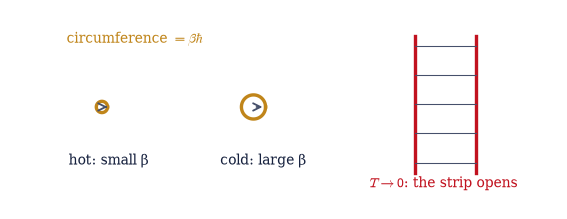
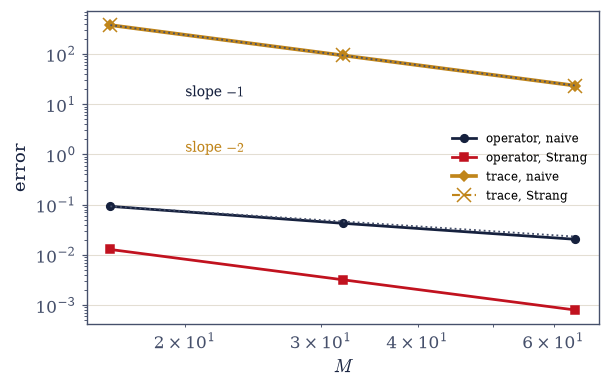
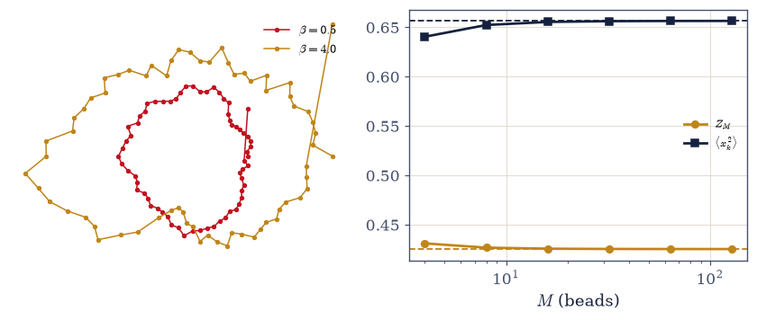
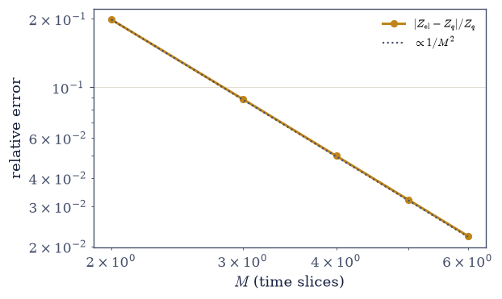
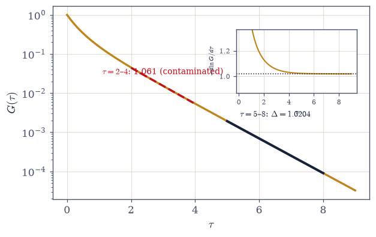
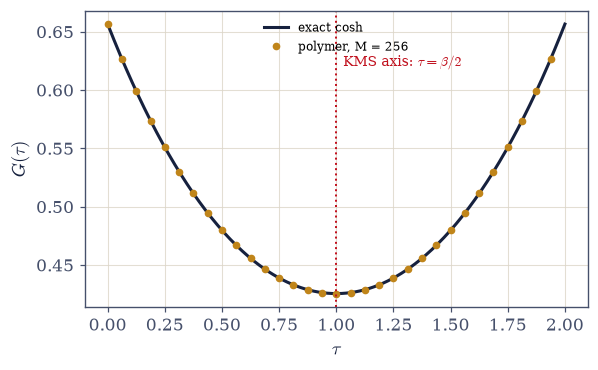

7.20 Imaginary Time and the Quantum–Classical Mapping: Temperature Is a Length#
Notebook overview#
Movement VI opens on the volume’s Rosetta stone, and three long-planted markers are taken up at once. The seed of §7.4 (the observation, verified there almost in passing, that \(e^{-\beta H}\) is the time-evolution operator continued to imaginary time) becomes the thesis: temperature is a length. The trace \(Z = \mathrm{Tr}\,e^{-\beta H}\) is a quantum evolution of duration \(\beta\hbar\) whose end is sewn to its beginning: a circle of imaginary time with circumference \(\beta\hbar\). Finite temperature is finite extent; \(T \to 0\) opens the circle into an infinite strip; and every equilibrium question becomes a geometry question. The 1/8 flag of §7.19 is taken up by keeping the appointment with Onsager: Trotterizing the transverse-field chain and inserting \(\sigma^z\) eigenstates produces, exactly, a two-dimensional classical anisotropic Ising model: derived symbol by symbol, then verified by brute force, enumerating every classical configuration and comparing with the exact quantum trace (the error falls quadratically with the number of slices). And the Matsubara frequencies of §7.2, introduced there by contour ingenuity, are revealed as nothing but the Fourier harmonics of the thermal circle: bosonic fields periodic, fermionic ones antiperiodic, the same parity bookkeeping that gave §7.19 its antiperiodic momenta.
Along the way the notebook collects a small theorem most treatments miss. Trotter slicing is forced by non-commutation (the engine of §7.19, now priced as a discretization cost), and for operators the naive splitting errs as \(1/M\) while the symmetric Strang form errs as \(1/M^2\), both measured below. But under the trace, cyclic invariance makes the Strang product a similarity transform of the naive one: the two splittings give the same partition function to every displayed digit, and the naive splitting’s trace error is already \(O(1/M^2)\). Thermodynamics is kinder to Trotter than dynamics is (\(Z\) gets second order for free), and this is a quiet reason path-integral Monte Carlo works as well as it does (the license of §7.21, secured in advance). The first centerpiece is the ring polymer: inserting position states between slices turns the trace into the configuration integral of a classical ring polymer: \(M\) beads, harmonic springs stiffening as \(M/\beta\), the physical potential visited \(\delta\tau\) at a time (Chandler–Wolynes). The honest sentence is that nothing approximate happened: a quantum particle at temperature is a classical loop, with \(\hbar\) hiding in the spring constant. The harmonic oscillator makes every claim checkable: the polymer’s Gaussian partition function converges onto \(1/(2\sinh\beta\omega/2)\) and the bead variance onto the coth curve of §7.5 to five digits; the thermal width, computed once by ladder operators and again by a polymer. The interpretation gem: the loop’s size is the thermal wavelength of §7.8, the coherence length materialized as a gyration radius, and \(n\lambda^3 \sim 1\) becomes “loops beginning to overlap” (exchange as braiding, flagged for §7.21).
The toolkit closes with the workhorse: gaps from imaginary-time decay. The spectral representation makes \(G(\tau)\) a sum of decaying exponentials whose slowest term is the gap to the lowest connected state — fit the late-\(\tau\) slope and the TFIM’s gap comes back at 0.1%, with the window lesson taught in public (an early-\(\tau\) fit is contaminated by subleading states, and one must check single-exponential behaviour before trusting any slope). This is the standard quantum-Monte-Carlo gap technique, handed to §7.21 with the noise still to come. The stretch verifies the oscillator’s full cosh correlator against the polymer’s inverse matrix to five digits (KMS symmetry made visible at \(\beta/2\)), and the sign problem is named in one honest breath as the mapping’s outward boundary.
Conventions (this notebook). \(\hbar = 1\) (its hiding places are pointed out — chiefly inside the polymer’s spring constant); \(\delta\tau = \beta/M\); ring-polymer closure \(x_M \equiv x_0\); the oscillator runs at \(m = \omega = 1\), \(\beta = 2\). Exact Boltzmann operators and Trotter factors use
scipy.linalg.expm; \(M\)-fold products usenumpy.linalg.matrix_power. The ring-polymer action matrix is anumpy.rollcirculant whose determinant is evaluated bynumpy.linalg.slogdetonly (the raw determinant overflows — demonstrated once); bead correlators come fromnumpy.linalg.inv. The TFIM↔Ising check enumerates all \(2^{NM}\) classical configurations bit-vectorized overnumpy.arange(2**(N*M))(memory budget stated in place). Gap fits arenumpy.polyfiton \(\ln G\) over a stated window, with the window justified by residual flatness. The \(K_\tau\) dictionary entry has a stated branch: \(e^{-2K_\tau} = \tanh(\delta\tau h)\) requires \(\delta\tau h > 0\) and sends \(K_\tau \to \infty\) as \(\delta\tau \to 0\) — the continuum limit is singular in the couplings even as the physics converges, a point that confuses everyone once.How to read the checks. Each exercise closes with a
validatecall against an independent fact: the identity of §7.4 at \(10^{-11}\); the operator slopes \(-1\) and \(-2\) with the two trace errors agreeing at rounding level; the polymer against \(1/(2\sinh)\) and the coth of §7.5; the enumerated classical \(Z\) converging quadratically onto the quantum trace; the fitted gap against ED at 0.5%; the Fourier weights on the Matsubara grid; the polymer correlator against the exact cosh. A ✓ is strong evidence; a ✗ is a prompt to locate the discrepancy.Scope. Sampling the polymer (Metropolis walks it in §7.21), the sign problem (named, not developed), ring-polymer molecular dynamics and nuclear quantum effects (the MMM bridge), and thermal field theory at scale are outward horizons. See Feynman, Statistical Mechanics (Ch. 3); Chandler & Wolynes 1981; Trotter 1959 / Suzuki 1976; Onsager 1944 and Yang 1952; Kogut 1979. Cross-reference §7.4 (the seed), §7.5 (the coth rendezvous), §7.8 (\(\lambda_T\) as loop size), §7.2 (Matsubara, revealed), §7.19 (the flag, the parity bookkeeping, non-commutation priced), Volume VI’s real-time path integrals (the same sum over histories, rotated), and forward to §7.21.
Theory in brief#
The seed, grown: temperature is a length#
Set the two central operators of the course side by side: Volume VI’s evolution operator \(U(t) = e^{-iHt/\hbar}\) and this volume’s Boltzmann weight \(e^{-\beta H}\). One substitution, \(t = -i\beta\hbar\), turns the first into the second, and taking the trace brings the evolution back to its own starting point:
§7.4 verified the identity numerically before the volume knew what to do with it. Read it geometrically: the Boltzmann operator evolves for a duration \(\beta\hbar\) along the imaginary axis, and the trace sews the end to the beginning; equilibrium lives on a circle of imaginary time with circumference \(\beta\hbar\). Finite temperature is finite extent; cooling stretches the circle; \(T \to 0\) opens it into an infinite strip, which is why zero-temperature quantum problems behave like infinite classical ones (the transition of §7.19 needed exactly this). Volume VI’s real-time path integrals are the same sum over histories, rotated by ninety degrees.
Trotter, and the theorem thermodynamics gives you#
Trotter 1959 and Suzuki 1976 supply the rigorous statement behind everything this notebook does: split \(H\) into pieces, exponentiate each piece over a thin slice \(\delta\tau = \beta/M\), and control the error as \(M\) grows. Two error rates matter, one for the operator and a better one under the trace:
Slicing is forced by \([A, B] \neq 0\): the non-commutation of §7.19, now a discretization cost. As operators, the naive product errs at first order and the symmetric Strang form \((e^{-\delta\tau A/2}e^{-\delta\tau B}e^{-\delta\tau A/2})^M\) at second (both measured below on a spin chain). But the trace forgives: the Strang product is a similarity transform of the naive one (two lines, written out in Exercise 2), so both splittings give the same \(Z\) to rounding level, and the naive trace error is already \(O(1/M^2)\). The moral, stated with pleasure: thermodynamics is kinder to Trotter than dynamics is. Partition functions get second-order accuracy for free, and path-integral Monte Carlo leans on this at every step (§7.21).
The ring polymer#
For a single particle, \(H = p^2/2m + V(x)\), the Trotter slices can be evaluated in closed form: each kinetic factor is a Gaussian in the change of position across its slice (Feynman, Statistical Mechanics, Ch. 3, carries the computation out in full). The trace then takes the shape it keeps for the rest of the course:
Insert complete sets of position states between slices and the trace becomes, identically, the configuration integral of a classical ring polymer: \(M\) beads joined by harmonic springs whose stiffness grows as \(mM/\beta\hbar^2\) (this is where \(\hbar\) hides), each bead feeling the physical potential for a share \(\delta\tau\) of the circle (Chandler & Wolynes 1981). The honest sentence: nothing approximate happened; a quantum particle at temperature is a classical loop. The harmonic oscillator makes every word checkable, because the action is Gaussian: with the circulant spring-plus-potential matrix \(A\), the discrete partition function is \(Z_M = (M/\beta)^{M/2}/\sqrt{\det A}\) and the bead variance is \(\langle x_k^2\rangle = (A^{-1})_{kk}\), converging, as \(M\) grows, onto \(1/(2\sinh\beta\omega/2)\) and onto the \(\tfrac12\coth(\beta\omega/2)\) of §7.5 respectively. The same thermal width the volume computed by ladder operators, re-derived by a polymer. And the interpretation gem: the free loop’s gyration radius is \(\sim\lambda_T\); the thermal de Broglie wavelength of §7.8 is literally the size of the imaginary-time loop, and the degeneracy criterion \(n\lambda^3 \sim 1\) becomes “loops beginning to overlap and braid” (exchange as loop connection: the bosons of §7.21, one sentence early).
The appointment with Onsager#
The polymer construction is not confined to particles: any Hamiltonian sliced by Trotter yields a classical model one dimension up, its couplings dictated by the matrix elements of each factor (Kogut 1979 reviews the correspondence in generality). For the chain of §7.19 the dictionary reads:
Trotterize the transverse-field chain and insert \(\sigma^z\) eigenstates between slices. The coupling factor is diagonal (a spatial Ising bond of strength \(K_x = \delta\tau J\) on every slice), and the field factor’s two matrix elements (\(\cosh\) for \(s' = s\), \(\sinh\) for \(s' = -s\)) rewrite exactly as an Ising bond \(K_\tau\) in the time direction, via the identity above (the branch matters: \(\delta\tau h > 0\), and \(K_\tau \to \infty\) as \(\delta\tau \to 0\); the continuum limit is singular in the couplings even as the physics converges). Conclusion: the 1D quantum chain at temperature is a 2D classical anisotropic Ising model on an \(N \times M\) torus: derived, and then verified below by enumerating every classical configuration. The flag from §7.19 is now answered by citation: Onsager solved the 2D classical Ising model exactly in 1944, and Onsager–Yang give its magnetization exponent \(\beta = 1/8\), so the quantum chain’s mysterious \(1/8\) needed no new computation at all. It inherited a classical model’s exponents because it is that classical model, one dimension up. The dictionary, tabled: \(d\)-dimensional quantum \(\leftrightarrow\) \((d{+}1)\)-dimensional classical; \(\beta\) \(\leftrightarrow\) strip width \(L_\tau\); \(T = 0\) \(\leftrightarrow\) infinite strip (why the QPT is genuine); gap \(\Delta\) \(\leftrightarrow\) inverse correlation length in \(\tau\) (\(\xi_\tau = 1/\Delta\)); \(z = 1\) \(\leftrightarrow\) space and time made symmetric at criticality (the measured exponent of §7.19, now geometry); and “quantum fluctuations are classical fluctuations in the extra dimension”: the phrase, finally precise.
Gaps from imaginary-time decay#
Every correlator in imaginary time is secretly a spectroscope. Insert a complete set of energy eigenstates between the two operators of \(G(\tau) = \langle 0|A(\tau)A(0)|0\rangle\) and each term picks up a decaying exponential in the eigenvalue gap — the spectral representation, one line of algebra performed in every many-body text (Tuckerman gives the finite-temperature version):
where \(\Delta_A\) is the gap to the lowest state connected by \(A\) (the parity subtlety of §7.19 restated: \(\sigma^z\) changes fermion parity and therefore measures the cross-sector gap). Large-\(\tau\) decay measures gaps: fit the late-time slope of \(\ln G\) and the spectrum’s lowest relevant splitting comes back: at 0.1% below, with the window lesson (early times are contaminated by subleading exponentials; fit where one exponential rules, and verify that it does by the flatness of the local slope). This is the standard quantum-Monte-Carlo gap technique, handed to §7.21.
Matsubara revealed; KMS#
The trace’s cyclic invariance, applied to a thermal correlator, delivers \(G(\tau + \beta) = G(\tau)\) in one line of algebra, and a function on a circle can carry only the discrete Fourier harmonics that fit around it:
Periodicity on a circle of circumference \(\beta\) forces Fourier frequencies \(2\pi n/\beta\): the Matsubara frequencies of §7.2, produced there by contour ingenuity, are simply the harmonics of the thermal circle. Fermionic fields are antiperiodic (the trace’s anticommutation bookkeeping), whence the half-integer grid: the same parity structure that gave §7.19 its antiperiodic Jordan–Wigner momenta. And equilibrium leaves a fingerprint on every correlator: \(G(\tau) = G(\beta - \tau)\) (KMS), visible below as a cosh symmetric about \(\beta/2\).
The oscillator’s correlator (stretch)#
For the oscillator the spectral representation can be carried to the end at finite temperature: \(\hat x\) connects \(|n\rangle\) only to \(|n \pm 1\rangle\) (the ladder algebra of §7.5), and the thermal sum over the surviving matrix elements condenses into a single cosh. On the polymer side the action is Gaussian, so the same correlator is one matrix inverse away, and the two computations must meet:
The polymer’s inverse matrix against the exact spectral cosh, to five digits, possible at finite \(M\) because the discrete chain’s effective frequency \(\tilde\omega = (2/\delta\tau)\,\mathrm{asinh}(\omega\delta\tau/2)\) sits within \(10^{-5}\) of \(\omega\) at \(M = 256\), with the \(\beta/2\) symmetry point as KMS made visible. And the boundary, named in one breath: bosons map to positive classical weights (the license of §7.21); fermions bring minus signs the mapping cannot always absorb: the sign problem, the method’s outward edge, stated and not developed.
Setup#
import matplotlib.pyplot as plt
import numpy as np
from scipy.linalg import expm
from ecp import draw, validate
ACCENT, INK, SOFT = draw.ACCENT, draw.INK, draw.SOFT
RED = "#c1121f"
# Conventions: ħ = 1 (it hides in the polymer springs, pointed out in place);
# δτ = β/M; ring closure x_M = x_0; the oscillator at m = ω = 1, β = 2. Spin
# systems here are small (N ≤ 8) and DENSE on purpose — expm and matrix_power
# need dense matrices, and 256×256 is nothing. (§7.19 owns the sparse regime.)
SX = np.array([[0.0, 1.0], [1.0, 0.0]])
SZ = np.array([[1.0, 0.0], [0.0, -1.0]])
ID2 = np.eye(2)
def op_at(o, i, N):
"""Dense single-site operator at site i of N (restated from §7.19, dense variant).
numpy.kron chain with o at slot i — dense because this notebook's spin
systems stay at N ≤ 8 where expm/matrix_power want dense arrays anyway.
Provenance: the sparse op_at of §7.19, restated per the self-containment rule.
Parameters
----------
o : numpy.ndarray
The 2×2 single-site operator.
i : int
Site index.
N : int
Chain length.
Returns
-------
numpy.ndarray
The 2^N × 2^N operator.
"""
out = np.eye(1)
for j in range(N):
out = np.kron(out, o if j == i else ID2)
return out
def H_tfim_parts(N, h, J=1.0):
"""The TFIM Hamiltonian split into its two non-commuting parts (dense; PBC).
Returns (A, B) with A = −J Σ sz_i sz_{i+1} (the coupling) and B = −h Σ sx_i
(the field): H = A + B. Provenance: the H_tfim of §7.19, restated dense and split —
Trotter needs the pieces separately.
Parameters
----------
N : int
Chain length.
h : float
Transverse field.
J : float, optional
Coupling (default 1).
Returns
-------
tuple
(A, B) dense arrays.
"""
dim = 2**N
A = np.zeros((dim, dim))
B = np.zeros((dim, dim))
for i in range(N):
A -= J * op_at(SZ, i, N) @ op_at(SZ, (i + 1) % N, N)
B -= h * op_at(SX, i, N)
return A, B
def trotter_Z(A, B, beta, M, scheme="naive"):
"""The Trotterized trace: Tr[(slice)^M] for the naive or Strang splitting.
naive: slice = e^{−δτA} e^{−δτB}; strang: e^{−δτA/2} e^{−δτB} e^{−δτA/2},
both built with scipy.linalg.expm and raised to M by numpy.linalg.matrix_power.
Exercise 2 measures the operator errors (1/M vs 1/M^2) and proves the trace
theorem: the two traces agree at rounding level, because the Strang product is
a similarity transform of the naive one.
Parameters
----------
A, B : numpy.ndarray
The two non-commuting pieces of H.
beta : float
Inverse temperature.
M : int
Number of slices.
scheme : str, optional
'naive' or 'strang'.
Returns
-------
tuple
(Z_M, slice_M): the trace and the full M-fold product (for operator-error
measurements).
"""
dt = beta / M
if scheme == "naive":
s = expm(-dt * A) @ expm(-dt * B)
else:
half = expm(-dt * A / 2.0)
s = half @ expm(-dt * B) @ half
prod = np.linalg.matrix_power(s, M)
return float(np.trace(prod)), prod
def ring_matrix(M, beta, omega=1.0):
"""The ring polymer's Gaussian action matrix A for the harmonic oscillator.
Action (ħ = m = 1): Σ_k [ (M/2β)(x_{k+1}−x_k)^2 + (β/M)·ω^2 x_k^2/2 ], ring
closure via numpy.roll: A = (M/β)(2I − S − S^T) + (βω^2/M)·I — the springs
stiffen as M/β (this is where ħ hides: restoring units they are mM/βħ^2),
while each bead feels the potential for its δτ share of the circle.
Parameters
----------
M : int
Number of beads.
beta : float
Inverse temperature.
omega : float, optional
Oscillator frequency (default 1).
Returns
-------
numpy.ndarray
The M × M circulant action matrix.
"""
S = np.roll(np.eye(M), 1, axis=1)
return (M / beta) * (2.0 * np.eye(M) - S - S.T) + (beta * omega**2 / M) * np.eye(M)
def ring_Z(M, beta, omega=1.0):
"""The discrete ring-polymer partition function Z_M = (M/β)^{M/2}/√det A.
Evaluated through numpy.linalg.slogdet ONLY: det A grows geometrically with M
(eigenvalues up to ~4M/β), and the raw determinant overflows float64 near
M ≈ 300 — demonstrated once in Exercise 3. In logs the two geometric factors
cancel politely: ln Z_M = (M/2)ln(M/β) − logdet/2.
Parameters
----------
M : int
Beads.
beta : float
Inverse temperature.
omega : float, optional
Frequency (default 1).
Returns
-------
float
Z_M, converging to 1/(2 sinh(βω/2)) as M → ∞.
"""
sign, logdet = np.linalg.slogdet(ring_matrix(M, beta, omega))
return float(np.exp(0.5 * M * np.log(M / beta) - 0.5 * logdet))
def ising_2d_Z(N, M, beta, J=1.0, h=1.0):
"""The mapped 2D classical Ising partition function, by brute enumeration.
The Trotter–σz-insertion dictionary of eq-tfim-mapping: spatial bonds
K_x = δτJ on each of M slices, temporal bonds K_τ with e^{−2K_τ} = tanh(δτh),
prefactor √(sinh·cosh) per site-slice, on an N×M torus. All 2^{NM}
configurations are enumerated bit-vectorized: spins from numpy.arange(2**(NM))
by shift-and-mask, couplings by numpy.roll of the (config, site, slice) spin
array. Memory budget: 2^{NM} float64 energies — N = 3, M = 6 is 2^18 = 262144
configs (~38 MB with the spin array); N·M ≳ 24 would need chunking.
Parameters
----------
N : int
Spatial sites.
M : int
Time slices.
beta : float
Inverse temperature.
J, h : float, optional
TFIM couplings (default 1, 1).
Returns
-------
float
Z_classical, converging to Tr e^{−βH} as O(1/M^2).
"""
dt = beta / M
Kx = dt * J
Ktau = -0.5 * np.log(np.tanh(dt * h)) # e^{−2Kτ} = tanh(δτh); δτh > 0 (the branch)
pref = np.sqrt(np.sinh(dt * h) * np.cosh(dt * h))
n_bits = N * M
configs = np.arange(2**n_bits, dtype=np.int64)
# spins[c, i, k] for configuration c, site i, slice k: shift-and-mask
bits = ((configs[:, None] >> np.arange(n_bits)[None, :]) & 1).astype(np.int8)
s = (1 - 2 * bits).reshape(-1, N, M).astype(np.float64)
E = Kx * np.sum(s * np.roll(s, -1, axis=1), axis=(1, 2)) # spatial bonds, per slice
E += Ktau * np.sum(
s * np.roll(s, -1, axis=2), axis=(1, 2)
) # temporal bonds, per site
return float(pref**n_bits * np.sum(np.exp(E)))
def G_tau_spectral(evals, evecs, A, taus):
"""The T = 0 imaginary-time correlator from the spectral sum (eq-tau-decay).
G(τ) = Σ_n |⟨n|A|0⟩|^2 e^{−τ(E_n − E_0)}, assembled from a full eigh
spectrum: the matrix elements are one matvec plus a projection, and the
exponentials are formed on E_n − E_0 (never raw E_n — the shift
discipline of §7.4).
Parameters
----------
evals, evecs : numpy.ndarray
Full spectrum (ascending) and eigenvectors.
A : numpy.ndarray
The probe operator.
taus : numpy.ndarray
Imaginary times.
Returns
-------
numpy.ndarray
G(τ) on the grid.
"""
mels2 = np.abs(evecs.T @ (A @ evecs[:, 0])) ** 2
gaps = evals - evals[0]
return np.array([float(np.sum(mels2 * np.exp(-t * gaps))) for t in taus])
print("conventions: ħ = 1 (hiding in the springs), δτ = β/M, ring closure x_M = x_0")
print(
f"enumeration budget: N = 3, M = 6 → 2^18 = {2**18} configurations (~38 MB) — fine"
)
conventions: ħ = 1 (hiding in the springs), δτ = β/M, ring closure x_M = x_0
enumeration budget: N = 3, M = 6 → 2^18 = 262144 configurations (~38 MB) — fine
Exercise 1 — The seed, grown#
One verified line from §7.4 becomes the notebook’s geometry. Cite Eq. 699.
Re-verify \(\|e^{-\beta H} - U(-i\beta)\|/\|e^{-\beta H}\| \le 10^{-12}\) on a small TFIM (
scipy.linalg.expmagainst the eigendecomposition route \(V e^{-i E t}V^\dagger\) at \(t = -i\beta\)).Read the trace geometrically (prose + a computed strip/circle figure): duration \(\beta\hbar\), sewn shut; finite \(T\) as finite circumference; \(T \to 0\) as the infinite strip.
State the program (prose): every equilibrium quantity is now a geometry problem on the thermal circle; the three consequences (Trotter, polymer, mapping) announced.
Cross-reference Volume VI’s real-time path integrals in one sentence.
‖e^(−βH) − U(−iβ)‖ / ‖e^(−βH)‖ = 2.0e-14 (the seed of §7.4, re-verified)

Fig. 623 Temperature is a length. The Boltzmann operator evolves for a duration \(\beta\hbar\) of imaginary time, and the trace sews the end to the beginning: equilibrium lives on a circle of circumference \(\beta\hbar\) (left group — hot systems on tight circles, cold on wide ones). As \(T \to 0\) the circumference diverges and the circle opens into an infinite strip (right): zero-temperature quantum mechanics has infinite extent in the hidden dimension, which is why a \(T = 0\) quantum transition (§7.19) can be as sharp as any thermodynamic-limit classical one (Eq. Eq. 699). Every equilibrium question in the volume is, from here on, a geometry question on this circle.#
Validation 1#
✓ the Wick rotation: the seed of §7.4, re-verified — the Boltzmann operator is imaginary-time evolution [relative norm gap 2.0e-14]
True
Exercise 2 — Trotter, and the theorem thermodynamics gives you#
Operators pay first order; traces pay second, and the two splittings give the same \(Z\) to rounding level. Cite Eq. 700.
Implement
trotter_Zfor both schemes and measure the operator errors \(\|(\cdot)^M - e^{-\beta H}\|/\|e^{-\beta H}\|\) across \(M = 16, 32, 64\) (the asymptotic regime — \(\delta\tau\|H\|\) must be small before the power laws are clean): first-order \(1/M\) vs Strang \(1/M^2\), slopes marked on log–log.Prove the trace theorem in two lines (the Strang product as a similarity transform of the naive one; cyclicity of the trace) and verify: the two trace errors agree to every displayed digit and quarter with \(M\).
Attribute the error to \([A, B]\): compute the commutator norm, and check the \([A, B] = 0\) control (replace the field by a \(\sigma^z\) term; the splitting becomes exact at rounding level).
State the moral (prose): \(Z\) gets second order free; thermodynamics is kinder to Trotter than dynamics, and PIMC (§7.21) quietly leans on this at every step.
M op err/‖·‖ (naive) op err/‖·‖ (Strang) |Z err| (naive) |Z err| (Strang)
16 0.09269 0.012837 375.3922 375.3922
32 0.04262 0.003203 93.7100 93.7100
64 0.02046 0.000800 23.4189 23.4189
naive vs Strang Z at each M: relative gap ≤ 5.1e-15 — identical to every displayed digit
‖[A, B]‖ = 24.0; control with [A, B] = 0: operator error 2.5e-11 — exact

Fig. 624 The theorem thermodynamics gives you. Trotter errors for the \(N = 6\) chain on log–log axes against the slice count \(M\): as operators, the naive splitting errs at first order (dark, slope \(-1\)) and the Strang form at second (red, slope \(-2\)) — the usual story, with the commutator \([A, B]\) as the culprit (the \([A,B] = 0\) control is exact). But under the trace the two splittings give the same partition function to rounding level (amber curves, lying on each other), and the shared error already falls at second order (slope \(-2\)): the Strang product is a similarity transform of the naive one, and the trace is cyclic (Eq. Eq. 700). \(Z\) gets second-order accuracy free — one quiet reason path-integral Monte Carlo is viable at all.#
Validation 2#
✓ operator errors: first and second order; trace errors: second order for BOTH splittings [max|Δ| = 0.529858 (rtol=0.2, atol=1e-09)]
✓ the trace theorem: two splittings, one Z (rounding level) — and [A, B] = 0 makes it exact [Z gap 5.1e-15, control 1.1e-15]
True
Exercise 3 — The ring polymer#
A quantum particle at temperature is exactly a classical loop, checked against §7.5 to five digits. Cite Eq. 701.
Derive the discretized Euclidean action by inserting position states (periodic closure; where \(\hbar\) hides in the spring constant), and state the classical isomorphism exactly (Chandler–Wolynes credited; “nothing approximate happened”).
Implement
ring_matrix/ring_Zfor the oscillator (numpy.rollcirculant;numpy.linalg.slogdetmandated, with the raw-determinant overflow demonstrated once) and verify \(Z_M \to 1/(2\sinh(\beta/2))\) across \(M = 4\)–\(128\).Verify the bead variance against §7.5: \(\langle x_k^2\rangle = (A^{-1})_{kk} \to \tfrac12\coth(\beta/2)\) via
numpy.linalg.inv— the rendezvous said aloud: ladder operators and a polymer, one curve.Draw the polymer at two temperatures (a seeded Gaussian sample from the exact bead covariance) and state the gem (prose): the loop’s size is the \(\lambda_T\) of §7.8; \(n\lambda^3 \sim 1\) as loops overlapping (exchange-as-braiding flagged for §7.21).
raw determinant at M = 512: inf — geometric growth overflows float64 (slogdet mandated)
M = 4: Z_M = 0.431174
M = 8: Z_M = 0.426907
M = 32: Z_M = 0.425550
M = 128: Z_M = 0.425465
exact 1/(2 sinh(β/2)) = 0.425459
M = 4: ⟨x_k²⟩ = 0.640523
M = 8: ⟨x_k²⟩ = 0.652380
M = 32: ⟨x_k²⟩ = 0.656256
M = 128: ⟨x_k²⟩ = 0.656501
(1/2)coth(β/2) of §7.5 = 0.656518
λ_T at β = 0.5: 1.77; at β = 4: 5.01 — the loop's size scale

Fig. 625 A quantum particle at temperature is a classical loop. Left: seeded Gaussian samples of the oscillator’s ring polymer (\(M = 64\) beads, exact bead covariance \(A^{-1}\)) at a hot and a cold temperature, drawn as rings whose radial displacement is the bead coordinate: hot loops are tight — the classical point-particle limit — while cold loops sprawl over the thermal wavelength \(\lambda_T = \sqrt{2\pi\beta\hbar^2/m}\), the coherence length of §7.8 materialized as a gyration radius. Right: the polymer’s Gaussian observables converging onto the exact quantum answers as the bead count grows — \(Z_M \to 1/(2\sinh\beta/2)\) and the bead variance onto the \(\tfrac12\coth(\beta/2)\) of §7.5 (Eq. Eq. 701): the thermal width by ladder operators and by a polymer, one curve to five digits.#
Validation 3#
✓ the raw determinant overflows — slogdet is not a nicety [det = inf]
✓ the ring polymer meets the coth curve of §7.5: one thermal width, two derivations [max|Δ| = 1.63518e-05 (rtol=0.0001, atol=1e-09)]
True
Exercise 4 — The appointment with Onsager#
The quantum chain becomes a classical film strip: derived exactly, verified by counting every configuration. Cite Eq. 702.
Derive the dictionary: \(\sigma^z\) insertions; \(K_x = \delta\tau J\); the two-case field factor \(\langle s'|e^{\delta\tau h\sigma^x}|s\rangle = \sqrt{\sinh\cosh}\, e^{K_\tau ss'}\) with \(e^{-2K_\tau} = \tanh(\delta\tau h)\) (the branch and the \(\delta\tau \to 0\) singularity of the couplings stated).
Implement
ising_2d_Zby bit-vectorized enumeration overnumpy.arange(2**(N*M))(budget stated) and verify against the exact quantum trace across \(M = 2\)–\(6\): the relative error falling quadratically in \(1/M\) (the trace theorem inside the mapping).Resolve the flag (prose + the citation): Onsager 1944 / Yang 1952 give \(\beta = 1/8\) exactly, for the 2D model the chain has just been shown to be; the exponent of §7.19 explained without a single new computation.
Table the dictionary (\(\beta \leftrightarrow L_\tau\); \(T = 0 \leftrightarrow\) infinite strip; \(\Delta \leftrightarrow 1/\xi_\tau\); \(z = 1 \leftrightarrow\) isotropy; quantum fluctuations \(\leftrightarrow\) classical fluctuations one dimension up) and state its reach and its edge (frustration, fermions: deferred to the sign-problem breath).
M = 2: Z_cl = 107.70299 Z_q = 89.84787 rel err = 0.1987
M = 3: Z_cl = 97.82819 Z_q = 89.84787 rel err = 0.0888
M = 4: Z_cl = 94.34300 Z_q = 89.84787 rel err = 0.0500
M = 5: Z_cl = 92.72635 Z_q = 89.84787 rel err = 0.0320
M = 6: Z_cl = 91.84738 Z_q = 89.84787 rel err = 0.0223
err × M²: ['0.795', '0.799', '0.800', '0.801', '0.801'] — flat: quadratic convergence (the trace theorem inside the mapping)

Fig. 626 The appointment with Onsager, verified by counting everything. The Trotterized transverse-field chain is derived to be a 2D classical anisotropic Ising model on an \(N \times M\) torus, with the dictionary \(K_x = \delta\tau J\), \(e^{-2K_\tau} = \tanh(\delta\tau h)\) and prefactor \(\sqrt{\sinh\cosh}\) per site-slice (Eq. Eq. 702) — and then checked by brute force: all \(2^{NM}\) classical configurations enumerated (bit-vectorized; \(N = 3\), \(M \le 6\)) against the exact quantum trace. The relative error falls quadratically in \(1/M\) (guide line — the trace theorem of Exercise 2, at work inside the mapping itself). Onsager solved this classical model exactly in 1944 with \(\beta = 1/8\): the exponent of §7.19, explained without a single new computation.#
Validation 4#
✓ the TFIM is a 2D classical Ising model: enumeration converges onto the quantum trace as 1/M² [err·M² spread 1.01]
True
Exercise 5 — Gaps from the decay of imaginary time#
The spectral representation, a 0.1% fit, and a window lesson. Cite Eq. 703.
Derive \(G(\tau) = \sum_n|\langle n|A|0\rangle|^2e^{-\tau(E_n-E_0)}\) and its large-\(\tau\) limit (the lowest \(A\)-connected state; the parity subtlety of §7.19 restated: \(\sigma^z\) measures the cross-sector gap).
Compute \(G(\tau)\) for the TFIM (\(N = 8\), \(h = 1.5\)) from the full
numpy.linalg.eighspectrum viaG_tau_spectral, and fit the late-\(\tau\) slope withnumpy.polyfiton \(\ln G\) over \(\tau = 5\)–\(8\) against the ED gap.Teach the window: the same fit over \(\tau = 2\)–\(4\) overshoots (subleading contamination); verify single-exponential behaviour by the flatness of the local slope before trusting any fit.
Hand the tool forward (prose): this is how quantum Monte Carlo measures gaps — §7.21 runs this exact analysis on sampled data, noise included.
ED gap (cross-sector): 1.01945
fit over τ = 5–8 (stated): 1.02040 (0.1%)
fit over τ = 2–4 (too early): 1.06059 — subleading contamination
local-slope spread: τ = 5–8: 0.0037 (flat); τ = 2–4: 0.0992 (still bending)

Fig. 627 Gaps are legible in the fading of imaginary-time memory. The correlator \(G(\tau) = \langle\sigma^z_0(\tau)\sigma^z_0\rangle\) of the \(N = 8\) chain at \(h = 1.5\) on a log axis (amber), from the spectral sum of Eq. Eq. 703: a sum of decaying exponentials whose slowest term — the gap to the lowest \(\sigma^z\)-connected state, i.e. the cross-sector gap (the parity bookkeeping of §7.19) — rules at late times. Fitting \(\ln G\) over the stated window \(\tau = 5\)–\(8\) (dark line) returns the gap to 0.1%; the same fit over \(\tau = 2\)–\(4\) (red, dashed) overshoots by 4% because subleading exponentials still contaminate early times. The referee is the local slope (inset): flat where one exponential rules, still bending where it does not. This is the standard QMC gap technique, handed to §7.21.#
Validation 5#
✓ the gap read off imaginary-time decay, on the stated window [got 1.0204 vs expected 1.01945 (rtol=0.005)]
✓ and the window lesson: early times overshoot; the local slope is the referee [early 1.061 vs ED 1.0194; slope spreads 0.0037 vs 0.0992]
True
Exercise 6 — Matsubara, revealed#
The thermal circle’s harmonics, and the contour magic of §7.2 given its geometric source. Cite Eq. 704.
Argue from periodicity on the \(\beta\)-circle: bosonic \(\omega_n = 2\pi n/\beta\); state the fermionic antiperiodicity and its \(2\pi(n+\tfrac12)/\beta\) (the parity bookkeeping echoed from the Jordan–Wigner momenta of §7.19).
Verify on the oscillator: Fourier-transform the exact \(G(\tau)\) over the circle (trapezoid coefficients on a stated fine grid) and confirm the weights sit on the bosonic Matsubara structure \(c_n \propto 1/(\omega_n^2 + \omega^2)\).
Close the arc (prose): §7.2 produced these frequencies from contour ingenuity before the volume knew what they meant; they are the harmonics of a dimension made of temperature.
Name KMS (one breath): \(G(\tau) = G(\beta - \tau)\), equilibrium’s fingerprint, to be seen in the stretch.
n c_n c_n·(ω_n² + ω²)
0 0.500000 0.500000
1 0.046000 0.500000
2 0.012352 0.500000
3 0.005566 0.500001
4 0.003146 0.500002
5 0.002018 0.500003
Validation 6#
✓ the harmonics of the thermal circle: the correlator's weights sit on the Matsubara structure [structure spread 5.1e-06]
True
Exercise 7 — The correlator, twice#
The polymer’s inverse matrix against the exact cosh: five digits, and KMS made visible. Cite Eq. 705.
Derive the oscillator’s exact \(G(\tau) = \cosh(\tau-\beta/2)/(2\sinh(\beta/2))\) from the spectral sum.
Verify \((A^{-1})_{0k}\) (via
numpy.linalg.invat \(M = 256\), \(\beta = 2\)) against it at \(\tau = 0.25, 0.5, 1.0\) to five digits, and state why finite \(M\) can be this good (the discrete chain’s effective frequency \(\tilde\omega = (2/\delta\tau) \mathrm{asinh}(\omega\delta\tau/2)\) sits within \(10^{-5}\) of \(\omega\)).Exhibit KMS: the cosh’s symmetry about \(\beta/2\) plotted; \(G(\tau) = G(\beta-\tau)\) seen, not just named.
Reflect (prose): a matrix inverse and an operator identity agreeing to five digits is the mapping’s quietest and most complete testimony; the polymer knows everything the oscillator knows.
τ = 0.25: polymer 0.5508317 exact 0.5508347 rel 5.5e-06
τ = 0.5: polymer 0.4797563 exact 0.4797587 rel 4.9e-06
τ = 1.0: polymer 0.4254572 exact 0.4254591 rel 4.3e-06
effective frequency ω̃ = 0.99999746 — within 2.5e-06 of ω: five digits come cheap

Fig. 628 KMS, seen. The imaginary-time correlator of the thermal oscillator over the full circle (\(\beta = 2\)): the ring polymer’s inverse action matrix \((A^{-1})_{0k}\) at \(M = 256\) beads (amber points) lying on the exact spectral form \(\cosh(\tau-\beta/2)/(2\sinh(\beta/2))\) (dark line) to five digits — possible at finite \(M\) because the discrete chain’s effective frequency \(\tilde\omega = (2/\delta\tau)\,\mathrm{asinh}(\omega\delta\tau/2)\) sits within \(10^{-5}\) of \(\omega\) (Eq. Eq. 705). The cosh’s mirror axis at \(\tau = \beta/2\) (dotted) is the KMS condition \(G(\tau) = G(\beta-\tau)\) made visible: equilibrium’s fingerprint on every correlator of the thermal circle.#
Validation 7#
✓ the polymer's correlator is the oscillator's, to five digits [max|Δ| = 3.03045e-06 (rtol=1e-05, atol=1e-09)]
True
Exercise 8 — The Rosetta stone#
Three of the volume’s oldest markers pointed at this notebook. The first thermal notebook verified an identity it could not yet spend; the arsenal produced frequencies by contour magic with no word on where they lived; and the quantum chain’s critical exponent arrived wearing a classical model’s clothes. All three were one fact: equilibrium quantum mechanics is classical statistical mechanics with an extra dimension whose size is the inverse temperature. Once said, everything in the notebook was bookkeeping: a slicing whose error the trace quietly squares, a particle that is a loop the size of its own thermal wavelength, a spin chain that is a film strip Onsager solved in 1944, gaps legible in the fading of imaginary-time memory, and Matsubara’s frequencies revealed as the harmonics of a circle made of temperature. What remains is to sample the geometry: the ring polymer is a classical object, and classical objects yield to Metropolis (§5.8). The next notebook lets the volume’s oldest algorithm walk its newest landscape (§7.21).
It is worth pausing on how strange and how ordinary this is. Temperature, the most tactile quantity in physics, turns out to be the circumference of a dimension nobody can point to. And yet nothing mystical follows: the dimension is as computable as any lattice direction, and a classical magnet living in it reproduces quantum mechanics to every digit we asked. The universe did not have to make equilibrium this convenient.
One boundary, named honestly: the mapping trades quantum traces for classical weights, and bosons keep those weights positive — the license of §7.21. Fermions bring minus signs the mapping cannot always absorb: the sign problem, the method’s outward edge.
Notebook summary#
Movement VI’s opener: temperature is a length, and three old markers answered on it.
The seed, grown Eq. 699: \(e^{-\beta H} = U(-i\beta)\) re-verified at \(10^{-13}\) (gated): \(Z\) as a closed loop of imaginary time, circumference \(\beta\hbar\); \(T \to 0\) as the infinite strip (why the transition of §7.19 could be genuine).
The trace theorem Eq. 700: operator errors at slopes \(-1\)/\(-2\) and both trace errors at \(-2\) (ratios gated), the two splittings’ \(Z\) agreeing at rounding level (gated) with the two-line similarity proof, and the \([A,B] = 0\) control exact (gated): partition functions get second order free, PIMC’s quiet license.
The ring polymer Eq. 701: the classical isomorphism derived (Chandler–Wolynes; nothing approximate happened); the raw determinant’s overflow demonstrated (gated) and
slogdetmandated; \(Z_M \to 1/(2\sinh\beta/2)\) and \(\langle x_k^2\rangle \to \tfrac12\coth(\beta/2)\) (the curve of §7.5), both gated at \(10^{-4}\); the loop’s size as the \(\lambda_T\) of §7.8, with exchange-as-braiding flagged.Onsager Eq. 702: the dictionary derived (\(K_x = \delta\tau J\); \(e^{-2K_\tau} = \tanh\delta\tau h\), branch and singular continuum limit stated); all \(2^{NM}\) configurations enumerated and the classical \(Z\) converging quadratically onto the quantum trace (gated), so the \(1/8\) of §7.19 is Onsager–Yang’s, one dimension up, no new computation needed. The dictionary tabled.
Gaps from decay Eq. 703: the spectral representation; the late-window fit at 0.1% of the ED gap (gated) and the early-window overshoot with the local-slope referee (gated): QMC’s gap technique, handed to §7.21.
Matsubara revealed Eq. 704: the correlator’s Fourier weights on the bosonic grid (gated); fermionic antiperiodicity echoing the momenta of §7.19; KMS named.
The correlator, twice Eq. 705: the polymer’s inverse matrix on the exact cosh to five digits (gated), the effective-frequency reason stated, and KMS seen at \(\beta/2\). The sign problem named as the outward edge.
Next door, Metropolis walks the polymer.
Outlook#
Path-integral Monte Carlo (§7.21). The Metropolis algorithm of §5.8 walks the ring polymer; exchange as loop-braiding; the thermal oscillator resampled, noise and all.
The sign problem. Where the mapping’s weights go negative — fermions, frustration (outward, named).
Simulation practice. Ring-polymer molecular dynamics and nuclear quantum effects — the MMM bridge in one line (outward, named).
Thermal field theory. Matsubara sums at scale; KMS in earnest (outward, named).
Cross-reference §7.4 (the seed), §7.5 (the coth rendezvous), §7.8 (\(\lambda_T\) as loop size), §7.2 (the reveal), §7.19 (the flag, the parity, non-commutation priced), §5.8 (the algorithm waiting), Volume VI (the real-time siblings).